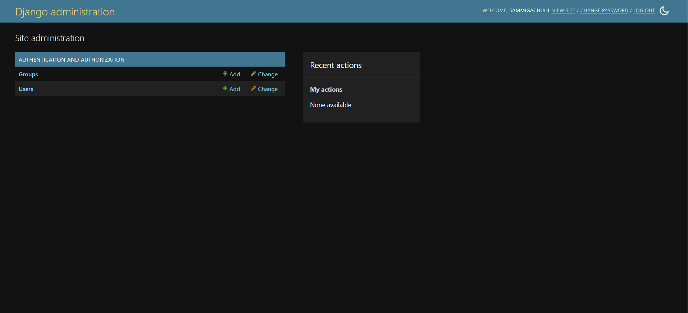

Chapter 17: Configuring Geodjango
Prerequisites for geodjango
To work with Geodjango, you will first have to install Postgresql and PostGIS.
Postgresql is the world's most powerful object-oriented database. The number one reason for us to use Postgresql is because Geodjango will only work with Postgresql, and not the default database of spatial lite. Other than that, Postgresql is the preferred database when working with large projects where your app will handle a significantly large number of uers.
PostGIS extends the capabilities of the PostgreSQL relational database by adding support for storing, indexing, and querying geospatial data.
Installing Postgresql
We will follow the steps from the Digital Ocean website.
First let's update our package manager cache by using apt:
sudo apt update
The above code makes sure that the system has sufficient information about the dependencies of each package. The code does not install any software, it only provides the information of the latest dependencies for each package.
When you run the above code you will be prompted for a username and password.
Thereafter, run the following code to install the necessary packages to enable Postgresql run smoothly.
sudo apt install python3-pip python3-dev libpq-dev postgresql postgresql-contrib
Creating a database and database user
During the Postgres installation, an operating system user named postgres was created to correspond to the postgres PostgreSQL administrative user. You need to use this user postgres to perform administrative tasks. Use sudo to pass in the username postgres along with the -u option which runs the command as a user, instead of root. Log into the interactive Postgres session by typing out the following:
sudo -u postgres psql
If you run the above code, a new shell script appears: postgres=#...
Now let's create a database called my_geodjango.
CREATE DATABASE my_geodjango;
Now let's create a user for this database.
CREATE USER gachuhi WITH PASSWORD '2013';
Let's do some modifications that will speed up our database operations.
ALTER ROLE gachuhi SET client_encoding TO 'utf8';
Let's grant all priviledges to the user samuel.
GRANT ALL PRIVILEGES ON DATABASE my_geodjango TO gachuhi;
As a sanity check to see a list of the existing databases and to confirm the newly created is one of them you can do this via: \list.
List of databases
Name | Owner | Encoding | Collate | Ctype | Access privileges
--------------+----------+----------+---------+---------+---------------------------
my_django | postgres | UTF8 | C.UTF-8 | C.UTF-8 | =Tc/postgres +
| | | | | postgres=CTc/postgres +
| | | | | samuel=CTc/postgres
my_geodjango | postgres | UTF8 | C.UTF-8 | C.UTF-8 | =Tc/postgres +
| | | | | postgres=CTc/postgres +
| | | | | gachuhi=CTc/postgres
--snip--
You can now exit the shell session via: \q.
Installing psycopg2
This package is used to connect Python to the Postgresql database.
pip install Django psycopg2
Configuring our database
As mentioned earlier, Geodjango will only work with the Postgresql database. And by the way, it is preferable to work with Postgresql for larger projects.
The default database for any Django project is the sqlite database as shown below.
DATABASES = {
'default': {
'ENGINE': 'django.db.backends.sqlite3',
'NAME': BASE_DIR / 'db.sqlite3',
}
}
However, we shall comment out the entire 'default' dictionary and replace it with the details of our Postgis enabled database.1
Replace the entire DATABASE variable with the new defaults. You can choose to comment out or completely erase the former 'defaults' values. I prefer to comment out so that I can easily revert to the originals in case things get tricky!
DATABASES = {
# 'default': {
# 'ENGINE': 'django.db.backends.sqlite3',
# 'NAME': BASE_DIR / 'db.sqlite3',
# }
'default': {
'ENGINE': 'django.contrib.gis.db.backends.postgis',
'NAME': 'my_geodjango',
'USER': 'gachuhi',
'PASSWORD': '2013',
'HOST': 'localhost',
'PORT': '',
}
}
1. NB: Other literature recommend setting theENGINEkey topostgresqlbut based on experience only thepostgisvalue works efficiently. ↩
Installing PostGIS
To install Postgis, simpy run:
sudo apt install postgis
You will be prompted for a password.
Let's go back to the Postresql shell again. We want to enable the PostGIS extension for our Django project.
sudo -u postgres psql
Once the Postgresql shell opens, insert the following:
CREATE EXTENSION IF NOT EXISTS postgis;
We shall designate the user we created, gachuhi as the superuser. Insert the following in the Postgresql shell
ALTER ROLE gachuhi SUPERUSER;
Make migrations
To persist our changes to the database, let's register our migrations via python3 manage.py makemigrations and then implement them via python3 manage.py migrate respectively.
Creating a superuser
We will create a superuser who will be the admin of our Django-admin platform.
To keep matters simple, we shall use the same credentials as those in our sanitation/ project.
python manage.py createsuperuser
You will be prompted for a username, email and password.
Username (leave blank to use 'sammigachuhi'): <your-username>
Email address: <your-email>
Password:
Password (again):
If the response you get after inserting your credentials is Superuser created successfully., then you're good to go.
Run our Geodjango server via python3 manage.py runserver and head to http://127.0.0.1:8000/admin/. Check if you can sign in using the username and password your provided above.
If all is well, it should take you to the Django-admin page below.
